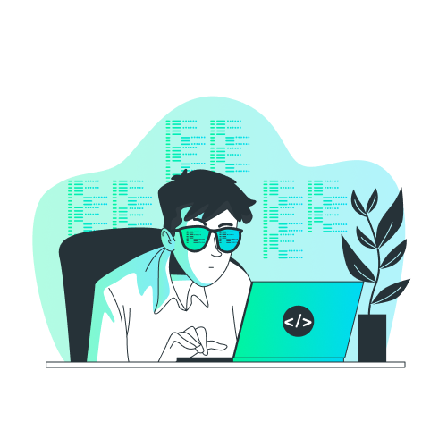
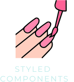
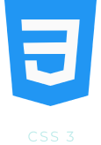
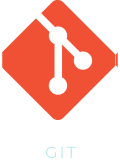
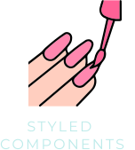
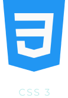
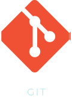

Desenvolvedor Front End

Jonathan Marques
Ajudando empresas a construírem produtos digitais de forma moderna e de alta qualidade.
Download CVAjudando empresas a construírem produtos digitais de forma moderna e de alta qualidade.
Download CVAtualmente desenvolvo projetos pessoais atuando como Front-End & UI/UX Design. Desenvolvendo interfaces modernas e de alta qualidade, concentrado em performance, animações, responsividade e SEO.
Trabelhei em projetos para pequenas empresas, desde a produção até o lançamento.
O bikcraft é um projeto desenvolvido para uma loja de bicicletas elétricas. Focando SEO, Performance e Responsividade. Durante o projeto foi utilizado CSS Utilitário para maior praticidade na estilização.
Esse é um projeto para fazer a converção de moeda em tempo real, utilizando API para ver a cotação atual das moedas no mercado.
 




